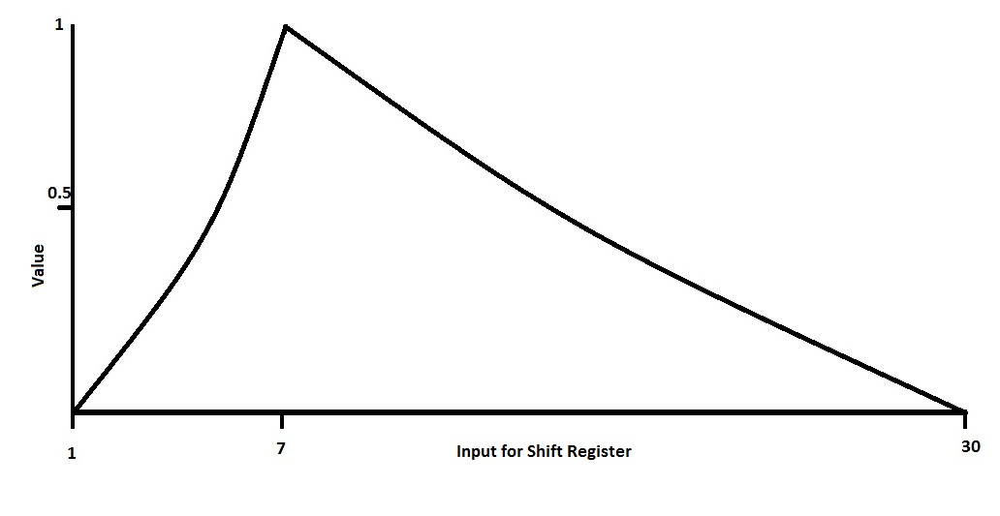
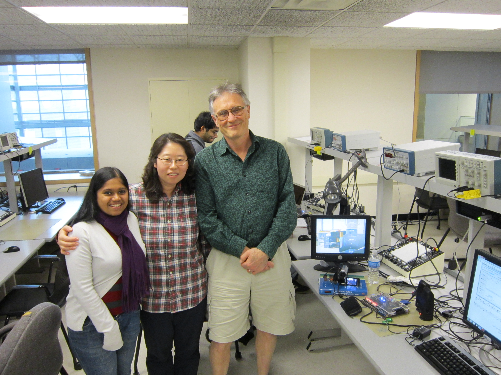

Young Hwa (Terry) Kim (yk579)
Varsha Madhuranath (vm285)
We got the idea for the project from Professor Land. The original idea was to implement a synthesized string instrument that can be played in the air similar to Air Guitar, which was one of final projects of previous students of the ECE 5760 class. The concept of the project is to provide a user interface similar to that of playing the harp except for the fact that there is no physical instrument in front of the user. Instead, the user’s finger motion in the air is recorded in real time to play virtual strings of different notes. We liked the idea of combining the visual component (VGA) and the audio component (audio codec) together so that we could utilize our knowledge in both areas that we obtained from previous lab assignments.
For the project, we used an Altera DE2 Development and Education board with Cyclone II EP2C35F672C6 FPGA, a Sony camcorder (connected to the DE2 board via Video In), a Dell VGA compatible monitor at a 640x480 resolution (connected to the DE2 board via XSGA Video Port) and a stereo speaker (connected to the DE2 board via Line In). We keep track of the movement of a player’s fingers to decide whether to play a string, which musical note of a string to play and whether to play the same note for the second time. We can detect the movements of fingers by detecting the changes in RGB values of pixels on the screen. For that, a player should put bright green color marker caps on her/his finger tips (or wrap the fingers with color tapes). The monitor and the camcorder face the player while the camcorder shoots a video of the player’s finger movements. The monitor screen shows where the fingers are without a mirror effect along with white lines and letters in the background. The lines indicate the each section for different notes and the letters tell the player which note the section is allocated to.
For prospective players of our virtual instrument, now we explain how to interact with our program and play a song. Our program is set to look for a bright green color as a virtual stroker (plucker) of a string. Wear a green marker cap or tape on your finger. Face the monitor and the camcorder, so you can see where your fingers are and which sections on the screen to aim to play a note of your choice. For example, to play middle C, aim for and cover the section labeled “middle C” on the screen with the green marker cap or tape. If you want to play the same note for the second time consecutively, you need to uncover the section by moving the finger away from it and place the finger in the section again covering it with green. Up to three notes can be played at the same time to make a chord. By using two of the dip switches on the board (SW[0] and SW[17]), you can choose to play notes on higher frequencies, which gives you different timber of sound. To play a note, you can waive your fingers back and forth or move them horizontally to cover and uncover the sections on the screen.
Wikipedia definition of Karplus Strong string synthesis is “a method of physical modeling synthesis that loops a short waveform through a filtered delay line to simulate the sound of a hammered or plucked string or some types of percussion.”
The actual implementation of the algorithm for our project is depicted in the diagram below:
The hardware components to implement a string consist of a shift register, a phase shifter and a low pass filter. The basic concept here is that an input pulse goes through a certain length of shift register for a coarse tuning and it goes through a phase shifter for a fine tuning. Then the output from the phase shifter goes through a simple low pass filter which adds a delayed version (previous output) to the output and divides the total by 2. The simple low pass filter basically averages two values before the result is fed back into the shift register. For an input pulse, we took Professor Land’s advice and chose a saw tooth wave with a sharp raise at the beginning. This works very well for a nice string sound and it works much better than some white noise. The amplitude of the pulse is 1, and the step values of the pulse to be fed into the shift register are converted to a 3.17 number format that is used in our hardware design. For example, 0.5 in 3.17 format is represented as 0.5*2^17 = 20’d65536. For your reference, mathematical representation of the phase shifter is y(n) = {x(n) - y(n-1)} * η + x(n-1).

Frequencies of musical notes that we implemented are tabulated below:
| Note | Frequency (Hz) |
| Low A#/Bb | 233.082 |
| Low B | 246.942 |
| Middle C | 261.626 |
| C#/ Db | 277.183 |
| D | 293.665 |
| D#/Eb | 311.127 |
| E | 329.628 |
| F | 349.228 |
| F#/Gb | 369.994 |
| G | 391.995 |
| G#/Ab | 415.305 |
| A | 440 |
| A#/Bb | 466.164 |
| B | 493.883 |
| C | 523.251 |
| High C#/Db | 554.365 |
The length of the shift register and the value of η are related to the pitch (frequency) of a note. Our default sampling rate, fs, is 8,000Hz. The length of a shift register, N, for a note of frequency, fo, can be obtained from the equation . For middle C, the length of shift register that we need is then 8000/261.626 = 30.58. We set N equal to 30. The sample delay, Δ, for middle C is then 0.58 and is defined in terms of η as Δ=(1-η)/(1+η). Conversely, η=(1-Δ)/(1+Δ).
The low pass filter uses a sign extended right shift for damping (decay factor). 0.5 is the maximum value for damping. However, we slightly lowered the decay factor to 0.4921875 because this produced much better string sounds than when damping was 0.5.
The following block diagram and the description of DE2_TV design are taken from Altera’s DE2_UserManual.pdf.
“The figure above shows the block diagram of the design. There are two major blocks in the circuit, called I2C_AV_Config and TV_to_VGA. The TV_to_VGA block consists of the ITU-R 656 Decoder, SDRAM Frame Buffer, YUV422 to YUV444, YCrCb to RGB, and VGA Controller. The figure also shows the TV Decoder (ADV7181) and the VGA DAC (ADV7123) chips used.
As soon as the bit stream is downloaded into the FPGA, the register values of the TV Decoder chip are used to configure the TV decoder via the I2C_AV_Config block, which uses the I2C protocol to communicate with the TV Decoder chip. Following the power-on sequence, the TV Decoder chip will be unstable for a time period; the Lock Detector is responsible for detecting this instability.
The ITU-R 656 Decoder block extracts YCrCb 4:2:2 (YUV 4:2:2) video signals from the ITU-R 656 data stream sent from the TV Decoder. It also generates a data valid control signal indicating the valid period of data output. Because the video signal from the TV Decoder is interlaced, we need to perform de-interlacing on the data source. We used the SDRAM Frame Buffer and a field selection multiplexer (MUX) which is controlled by the VGA controller to perform the de-interlacing operation. Internally, the VGA Controller generates data request and odd/even selected signals to the SDRAM Frame Buffer and filed selection multiplexer (MUX). The YUV422 to YUV444 block converts the selected YCrCb 4:2:2 (YUV 4:2:2) video data to the YCrCb 4:4:4 (YUV 4:4:4) video data format.
Finally, the YCrCb_to_RGB block converts the YCrCb data into RGB output. The VGA Controller block generates standard VGA sync signals VGA_HS and VGA_VS to enable the display on a VGA monitor.”
For more detailed information, please refer to Altera’s DE2 User Manual.
We found a matlab code that converts an image file to a .txt data file on a website for a final project titled BBQ Stick from a previous ECE 5760 class. Professor Land helped us run the matlab code and change the mode of the .bmp file to RGB mode using Photoshop. Since our image was in black and white, we needed only one bit to represent two colors and using only one bit per pixel could save us much space in memory (640x480 = 307,200 bits in total). We used a ROM from Altera Mega Function Wizard, which was instantiated in M4K blocks (we used about 70% of M4K blocks), to store the background image. The .txt file of the image was converted to a .mif file on Quartus and was used to initialize the memory. We learned about how to generate a .mif file from an image file on the BBQ Stick website.
Now the background image is stored in the memory and we have two images to send to the monitor screen: one from the camcorder and one in the memory. We checked the color value in the memory and if it was 0, black, then we chose the RGB value from the camcorder for a pixel, otherwise we chose the one bit value from the memory because the pixel was of white lines and letters. (A simple mux does the trick.)
To generate 16 notes of different frequencies, we set the default sampling rate at 8,000 Hz, which is the clock rate for all the state machines. Thus each state machine has a shift register of a different length and a different sample delay value for each phase shifter. A shift register consists of many 20-bit registers. (For better accuracy, we used 3.17 format instead of 3.13 format.) We chose not to use M4K blocks and it worked out well for us because 1) it turned out that we could not afford to add one more clock cycle to access the memory in the string synthesizer state machine because the string trigger state machine (STSM) at a much faster clock (VGA_CLK at 27 MHz, 3375 times faster) has to wait for the SSSM to send a signal before it can move onto the next state (this signaling between two state machines is explained later in details) and 2) we used 70% of M4K blocks to store the background image later. Overall we used about 50% of logic elements and resources available on the board to implement the entire system.
Basically, SSSM works as follows:
if (the string is plucked by STSM)
State machine diagram is shown below:
STSM and SSSM signal each other (handshaking) so that they can coordinate their executions although they work under different clock rates. This way, when a user places a green marker cap in a section for a note on the screen and does not remove it for a while, the string plays only one time and rests until the cap is removed from the section and placed there again for the second consecutive stoke.
Basically, the way STSM works is as follows:
state 0:
Waiting for the SSSM which operates under a slower clock rate to send signals before it could go to the next state, STSM stays in a few “wait” states for many numbers of VGA screen sweeps (refreshes). It means that we skip many frames without checking for changes in RGB values of a section. However, this does not affect the accuracy of our program because any fast human hand movement is much slower than the VGA refresh rate and the most human eyes cannot discern discontinuity when the frame rate is over 100 FRS (frame rate per second).
State machine diagram is shown below:
| Set 1 Note (default) | Set 1 Frequency (Hz) | Set 2 Note (SW[0]=1) | Set 2 Frequency (Hz) | Set 3 Note (SW[17]=1) | Set 3 Frequency (Hz) |
| Low A#/Bb | 233.082 | Low C#/Db | 139.848 | F | 349.620 |
| Low B | 246.942 | Low D | 148.166 | F#/Gb | 370.416 |
| Middle C | 261.626 | Low D#/Eb | 156.976 | G | 392.439 |
| C#/ Db | 277.183 | Low E | 166.309 | G#/Ab | 415.772 |
| D | 293.665 | Low F | 176.199 | A | 440.496 |
| D#/Eb | 311.127 | Low F#/Gb | 186.676 | A#/Bb | 466.690 |
| E | 329.628 | Low G | 197.775 | B | 494.438 |
| F | 349.228 | Low G#/Ab | 209.534 | High C | 523.834 |
| F#/Gb | 369.994 | Low A | 221.996 | High C#/Db | 554.990 |
| G | 391.995 | Low A#/Bb | 235.202 | High D | 588.005 |
| G#/Ab | 415.305 | Low B | 249.182 | High D#/Eb | 622.956 |
| A | 440 | Middle C | 263.997 | High E | 659.993 |
| A#/Bb | 466.164 | C#/Db | 279.704 | High F | 699.260 |
| B | 493.883 | D | 296.333 | High F#/Gb | 740.832 |
| High C | 523.251 | D#/Eb | 313.951 | High G | 784.878 |
| High C#/Db | 554.365 | E | 332.617 | High G#/Ab | 831.543 |
The figure below shows up to what number the counter should count to generate clock of which frequency.
Unfortunately we did not have more time to add more features to Air String. A user can choose from three different timbers of a string sound, but the notes in each set are not exactly distanced by an octave. Also, the notes with a sampling rate different from the default do not match the corresponding letter on the screen because we have only one background image stored in memory. Using additional memory such as SRAM and re-designing the frequency generator could improve Air String.
A tip for a player: Having a bright yellow light shining over the camcorder from the behind helps the color of the marker cap to be detected as a bright green color easily. It helps the player play better.
To detect the change in the finger movements of a player, we count the number of pixels of a specific color (in our case, a bright green color whose RGB value in hex is 24’h009900). To look for this color, we check if an RGB value from the camcorder satisfies the condition (VGA_G > 10'h99 && VGA_R < 10'h80 && VGA_B < 10'h80). We picked a green color of 24’h009900 because we usually do not see this color around us so that it could be easily distinguished from any background. Instead of using absolute values for RGB for a color check, when we tried the relevant condition (mGreen > mRed && mGreen > mBlue), the color detection did not work very well thus making it harder for a player to play.
We leave you with some suggestions on how you can improve Air String if you are interested in creating a project that combines audio and video.
The zipped project file can be downloaded from here.



A video of demonstration of our project is posted on YouTube: